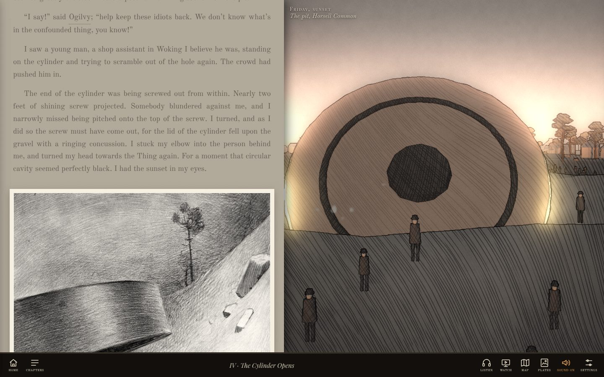

I
The war, drawn as you read it
Beside the text the war is drawn live, in pen, wash and hatching, in the manner of Alvim Corrêa’s plates: the pit at sunset as the lid falls, the Heat-Ray sweeping the common, the storm on the Maybury road, the river at Shepperton, the Black Smoke, the Thunder Child, the red weed, dead London. What the text tells happens there, at its word: read by eye, as the paragraph comes under it; listened to, as the word is spoken. Drag it to look about.
The dateline above it keeps the day and the hour, and the page darkens with the night in the story.
